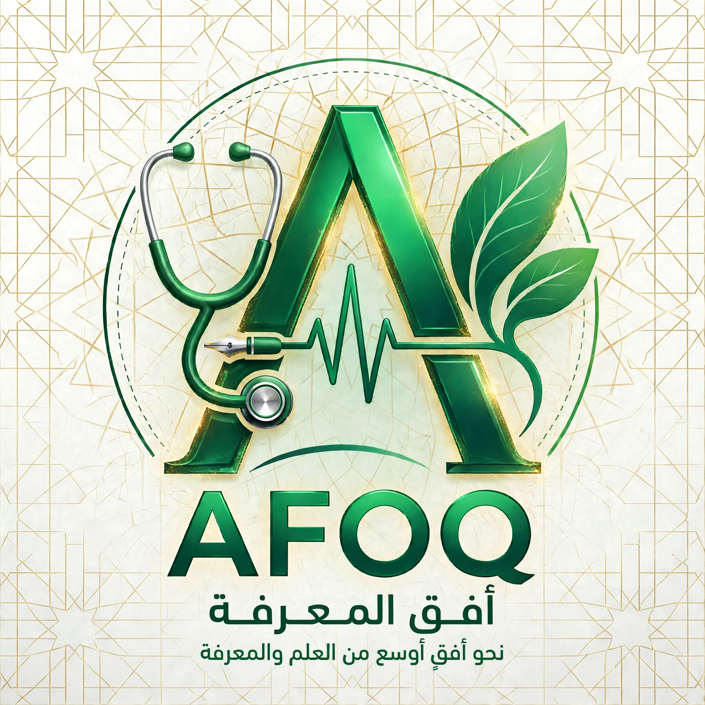

تخطي إلى المحتوى الرئيسي

أفق المعرفة
تصفّح كل الموارد
🔍
👤
★
نتائج البحث
بحث
تصفية النتائج:
كل الأنواع
كتاب
محاضرة
سلايدات
ملخص
أسئلة
امتحان سابق
ملاحظات
كل اللغات
عربي
إنجليزي
كل الجامعات
كل الكليات
كل السنوات
سنة 1
سنة 2
سنة 3
سنة 4
سنة 5
سنة 6
جارٍ البحث...
تحميل المزيد
↑
الإبلاغ عن مشكلة
المورد:
نوع المشكلة
الرابط لا يعمل
الملف غير صحيح
محتوى محمي بحقوق نشر
أخرى
ملاحظات إضافية (اختياري)
إرسال البلاغ
إلغاء